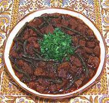

|
Beef / Lamb & Long BeansCentral Asia - Uzbekistan - Guisht lovia | ||||
| Serves: Effort: Sched: DoAhead: |
5 main *** 2 hrs Yes |
A simple but flavorfully beefy stew with long beans - easy to make and suitable for buffet service. The Notes below include how I've made changes to the pattern recipe, and why. | |||
|
|
2 8 8 2 ------ 1 1 1 ------ 1 1/2 ------ 3 8 1 1/2 1/3 ------ a/r |
# oz oz cl --- T T T --- t t --- T oz c T t ----- |
Beef / Lamb (1) Onions Long Beans (2) Garlic -- Herbs Basil Cilantro Parsley, flat -- Spices (3) Coriander Seed Cumin Seed -------- Ghee (4) Tomato Sauce (5) Beef Broth Salt Pepper, black -- Garnish Parsley |
Prep - (37 min - exclusive of making Broth)
|